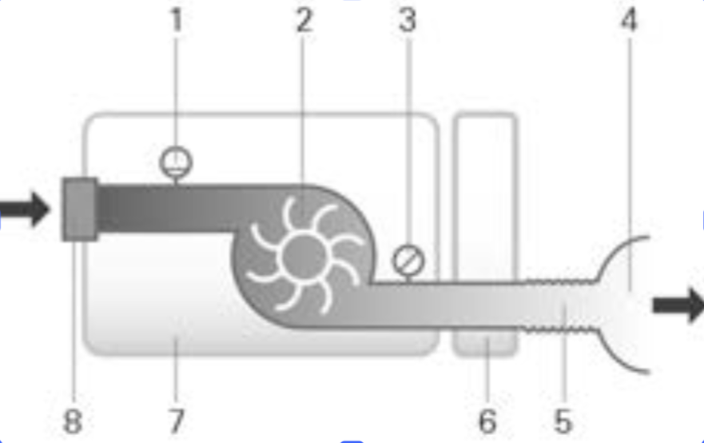

Units are expressed in cm H2O and hPa. 1 cm H2O is equal to 0.98 hPa.
| Power supply unit | 90 W |
|---|---|
| AC input range |
100–240 V, 50–60 Hz, 1.0–1.5 A, Class II 115 V, 400 Hz, 1.5 A, Class II (nominal for aircraft use) |
| DC output | 24 V |
| Typical power consumption | 53 W (57 VA) |
| Peak power consumption | 104 W (108 VA), 3.75 A |
| Operating temperature | +5 °C to +35 °C |
|---|---|
| Operating humidity | 10–95% relative humidity, non-condensing |
| Operating altitude |
Sea level to 2,591 m Air pressure range: 1013 hPa to 738 hPa |
| Storage and transport temperature | −20 °C to +60 °C |
| Storage and transport humidity | 5–95% relative humidity, non-condensing |
Note: The airflow produced by the device for breathing may be higher than the room temperature. Under extreme ambient temperature conditions (40 °C), the device remains safe.
The AirSense 10 complies with all applicable electromagnetic compatibility (EMC) requirements according to IEC 60601-1-2:2014, for residential, commercial, and light-industry environments.
It is recommended that mobile communication devices are kept at least 1 m away from the device.
Information regarding electromagnetic emissions and immunity can be found at www.resmed.com/downloads/devices.
| Electrical safety | EN 60601-1:2006 / A1:2013 |
|---|---|
| Protection class | Class II (double insulation) |
| Applied part | Type BF |
| Ingress protection | IP22 |
| Pressure sensor |
Internally located at device outlet Analog gauge pressure type 0 to 40 cm H2O (0 to 40 hPa) |
|---|---|
| Flow sensor |
Internally located at device inlet Digital mass flow type −70 to +180 L/min |
The device will shut down in the presence of a single fault if the steady-state pressure exceeds:
| SlimLine tubing | 25 dBA ±2 dBA |
|---|---|
| SlimLine or Standard with humidification | 27 dBA ±2 dBA |
| SlimLine tubing | 33 dBA ±2 dBA |
|---|---|
| SlimLine or Standard with humidification | 35 dBA ±2 dBA |
Noise emission values are declared in accordance with ISO 4871:1996. Measurements performed according to ISO 80601-2-70:2015.
| Dimensions (H × W × D) | 116 mm × 255 mm × 150 mm |
|---|---|
| Air outlet (complies with ISO 5356-1:2015) | 22 mm |
| Weight (device and cleanable humidifier) | 1248 g |
| Housing construction | Flame retardant engineering thermoplastic |
| Water capacity | To maximum fill line 380 mL |
| Cleanable humidifier – material | Injection moulded plastic, stainless steel and silicone seal |
| Maximum heater plate | 68 °C |
|---|---|
| Cut-out | 74 °C |
| Maximum gas temperature | ≤ 41 °C |
| Material | Polyester non woven fibre |
|---|---|
| Average arrestance | >75% for ~7 micron dust |
| Material | Acrylic and polypropylene fibres in a polypropylene carrier |
|---|---|
| Efficiency | >98% for ~7-8 micron dust; >80% for ~0.5 micron dust |
ResMed confirms that device meets the Federal Aviation Administration (FAA) requirements (RTCA/DO-160, section 21, category M) for all phases of air travel.
| Technology used | 4G, 3G, 2G |
|---|
Note: It is recommended that the device is a minimum distance of 0.8" (2 cm) from the body during operation. Not applicable to masks, tubes or accessories. Technology may not be available in all regions.
ResMed declares that the AirSense 10 device (models 370xx or 371xx) is in compliance with the essential requirements and other relevant provisions of Directive 2014/53/EU (RED). A copy of the Declaration of Conformity (DoC) can be found on Resmed.com/productsupport.
The 2G radio equipment operates with the following frequency bands and maximum radio-frequency power:
The 4G device can be used in all European countries without any restrictions.
All ResMed devices are classified as medical devices under the Medical Device Directive. Any labelling of the product and printed material, showing CE 0123, relates to the Council Directive 93/42/EEC including the Medical Device Directive amendment (2007/47/EC).
| AutoSet, CPAP | 4 to 20 cm H2O (4 to 20 hPa) |
|---|
| Maximum flow | 4 L/min |
|---|

| Device, power supply unit | 5 years |
|---|---|
| Cleanable humidifier | 2.5 years |
| Air tubing | 6 months |
The patient is an intended operator.
| Mask Pressure (cm H2O / hPa) | RH output % at 17°C ambient temperature | RH output % at 22°C ambient temperature | ||
|---|---|---|---|---|
| Setting 4 | Setting 8 | Setting 4 | Setting 8 | |
| 4 | 85 | 100 | 6 | >10 |
| 10 | 85 | 100 | 6 | >10 |
| 20 | 85 | 90 | 6 | >10 |
1 AH – Absolute Humidity in mg/L
2 BTPS – Body Temperature Pressure Saturated
Note: Nominal system output AH1, BTPS2
| Air tubing | Material | Length | Inner diameter |
|---|---|---|---|
| ClimateLineAir | Flexible plastic and electrical components | 2 m | 15 mm |
| ClimateLineAir Oxy | Flexible plastic and electrical components | 1.9 m | 19 mm |
| SlimLine | Flexible plastic | 1.8 m | 15 mm |
| Standard | Flexible plastic | 2 m | 19 mm |
Heated air tubing temperature cut-out: ≤ 41 °C
Notes:
| Value | Range | Display resolution |
|---|---|---|
| Pressure sensor at air outlet: | ||
| Mask pressure | 4–20 cm H2O (4–20 hPa) | 0.1 cm H2O (0.1 hPa) |
| Flow derived values: | ||
| Leak | 0–120 L/min | 1 L/min |
| Value | Accuracy |
|---|---|
| Pressure measurement1: | |
| Mask pressure2 | ±[0.5 cm H2O (0.5 hPa) + 4% of measured value] |
| Flow and flow derived values1: | |
| Flow | ±6 L/min or 10% of reading, whichever is greater, at 0 to 150 L/min positive flow |
| Leak2 | ±12 L/min or 20% of reading, whichever is greater, 0 to 60 L/min |
1 Results are expressed as STPD (Standard Temperature and Pressure, Dry).
2 Accuracy may be reduced by the presence of leaks, supplemental oxygen, tidal volumes <100 mL or minute ventilation <3 L/min.
3 Measurement accuracy verified as per EN ISO 10651-6:2009 for Home Care Ventilatory Support Devices (Figure 101 and Table 101) using nominal ResMed mask vent flows.
In accordance with ISO 80601-2-70:2015 the measurement uncertainty of the manufacturer's test equipment is:
| Measurement Type | Uncertainty |
|---|---|
| For measures of flow | ± 1.5 L/min or ± 2.7% of reading (whichever is greater) |
| For measures of volume (< 100 mL) | ± 5 mL or 6% of reading (whichever is greater) |
| For measures of volume (≥ 100 mL) | ± 20 mL or 3% of reading (whichever is greater) |
| For measures of static pressure | ± 0.15 cm H2O (hPa) |
| For measures of dynamic pressure | ± 0.27 cm H2O (hPa) |
| For measures of time | ± 10 ms |
Note: ISO 80601-2-70:2015 stated accuracies and test results provided in this manual for these items already include the relevant measurement uncertainty from the table above.
According to ISO 80601-2-70:2015
| Configuration | Without humidification | With humidification |
|---|---|---|
| Standard air tubing | ± 0.5 cm H2O (± 0.5 hPa) | ± 0.5 cm H2O (± 0.5 hPa) |
| SlimLine air tubing | ± 0.5 cm H2O (± 0.5 hPa) | ± 0.5 cm H2O (± 0.5 hPa) |
According to ISO 80601-2-70:2015
| Pressure [cm H2O (hPa)] | 10 BPM | 15 BPM | 20 BPM |
|---|---|---|---|
| 4 | 0.5 / 0.5 | 0.5 / 0.5 | 0.8 / 0.8 |
| 8 | 0.5 / 0.5 | 0.5 / 0.5 | 0.8 / 0.8 |
| 12 | 0.5 / 0.5 | 0.5 / 0.5 | 0.8 / 0.8 |
| 16 | 0.5 / 0.5 | 0.5 / 0.5 | 0.8 / 0.8 |
| 20 | 0.5 / 0.5 | 0.5 / 0.5 | 0.8 / 0.8 |
| Pressure [cm H2O (hPa)] | 10 BPM | 15 BPM | 20 BPM |
|---|---|---|---|
| 4 | 0.5 / 0.5 | 0.5 / 0.5 | 0.8 / 0.8 |
| 8 | 0.5 / 0.5 | 0.5 / 0.5 | 0.8 / 0.8 |
| 12 | 0.5 / 0.5 | 0.5 / 0.5 | 0.8 / 0.8 |
| 16 | 0.5 / 0.5 | 0.5 / 0.5 | 0.8 / 0.8 |
| 20 | 0.5 / 0.5 | 0.5 / 0.5 | 0.8 / 0.8 |
The following are measured accordingly to ISO 80601-2-70:2015 at the end of the specified air tubing:
| Pressure [cm H2O (hPa)] | AirSense 10 and Standard (L/min) | AirSense 10, humidification and Standard (L/min) | AirSense 10 and SlimLine (L/min) | AirSense 10, humidification and ClimateLineAir (L/min) |
|---|---|---|---|---|
| 4 | 180 | 143 | 162 | 151 |
| 8 | 168 | 135 | 151 | 142 |
| 12 | 157 | 136 | 140 | 135 |
| 16 | 144 | 134 | 128 | 121 |
| 20 | 131 | 123 | 117 | 109 |
The table illustrates the resistance to flow of the air tubing:
| Air tubing | At flow (L/min) with pressure of 20 cm H2O | Resistance to flow (cm H2O/L/min) | |
|---|---|---|---|
| Air tubing with tubing elbow | Air tubing only | ||
| Standard | 30 | 0.006 | 0.005 |
| 15 | 0.005 | 0.004 | |
| SlimLine | 30 | 0.008 | 0.007 |
| 15 | 0.006 | 0.006 | |
| ClimateLineAir | 30 | – | 0.011 |
| 15 | – | 0.008 | |
| ClimateLineAir Oxy | 30 | – | 0.004 |
| 15 | – | 0.002 | |
The table illustrates the compliance of the air tubing:
| Air tubing | Compliance (mL/cm H2O) with pressure of 60 cm H2O | |
|---|---|---|
| Air tubing with tubing elbow | Air tubing only | |
| Standard | 1.074 | 1.056 |
| SlimLine | 0.467 | 0.454 |
| ClimateLineAir | – | 0.482 |
| ClimateLineAir Oxy | – | 0.729 |